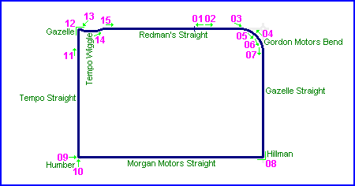
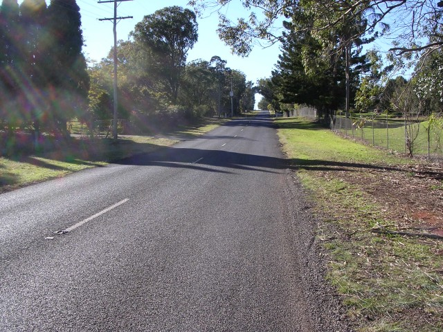
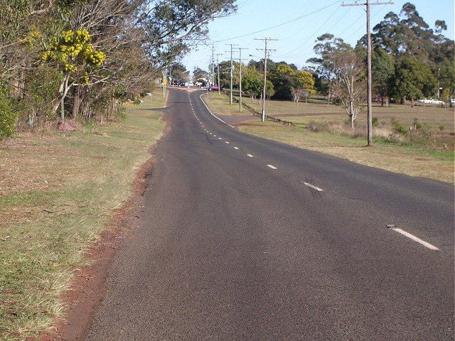
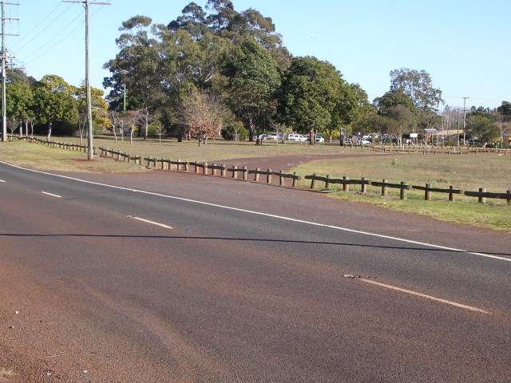
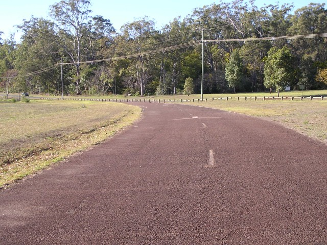
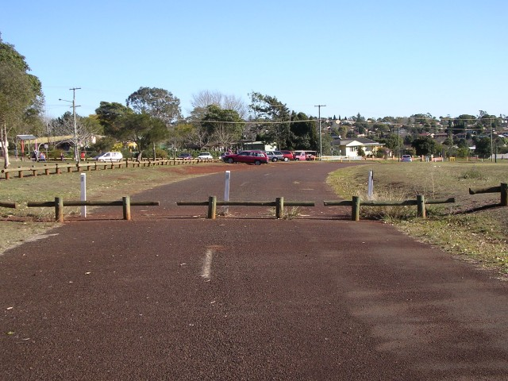
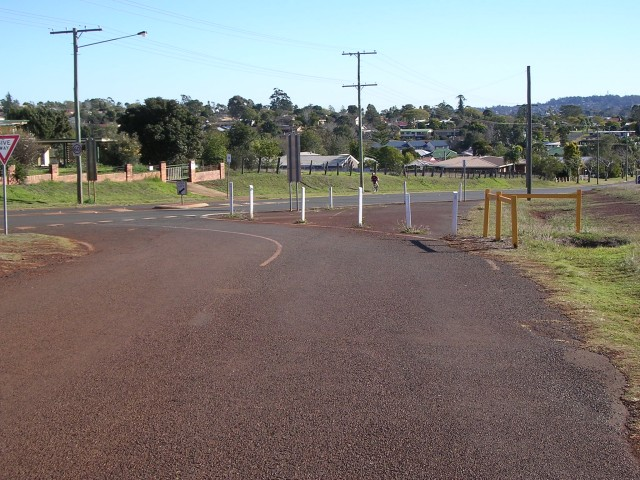
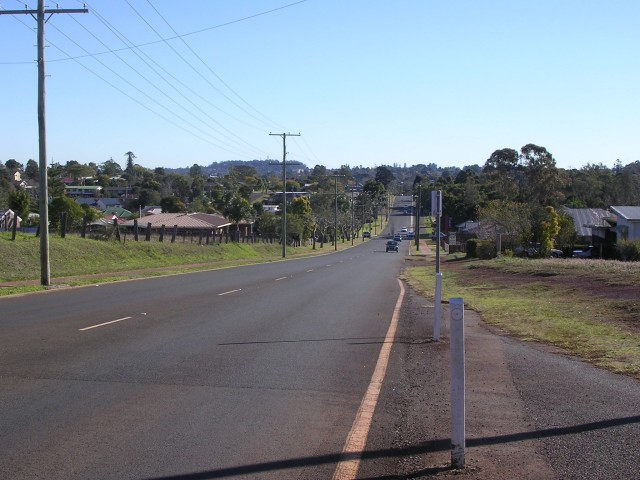
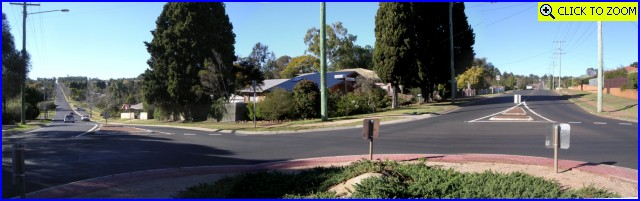

Middle Ridge - Redman's Straight to Hillman Corner
|| Contents || Redman's Straight to Hillman Corner | Morgan Motors Straight to Tempo Wiggle || Home ||

Numbers on the map represent the location where the photographs were taken. Scroll
down to view the photographs.
Return to racingcircuits.net's Photo Archive Main Index

01 - Looking back to the location of the Start/Finish area on Redman's
Straight (Stenner Street).

02 - Gordon Motors Bend curves away to the right ahead, between second and
third power poles.

03 - Gordon Motors Bend.

04 - Looking back to Stenner Street.

05 - Gordon Motors Bend is nowadays used as a school drop off point.

06 - Exit of Gordon Motors Bend.

07 - Gazelle Straight (MacKenzie Street) up to Hillman Corner.

08 - Hillman Corner. [Click
here to zoom in]
Photographs and Text ©Neil Fackerell. Reproduced here with kind permission.